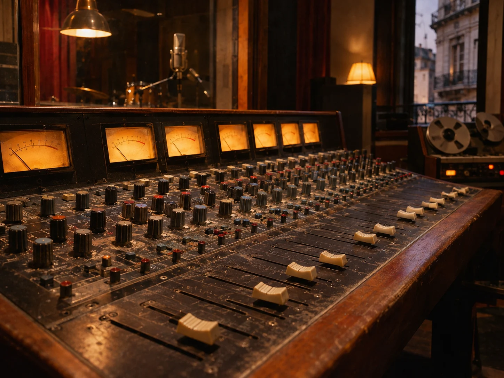

Ensayo a todo volumen.
Traé tus temas, tus ganas y a tu banda. Batería, amplificación y voces en un mismo espacio para que la próxima fecha empiece a tomar forma.
ENSAYO & GRABACIÓN ANALÓGICA
Almagro, Buenos Aires
Subí el volumen.
Probá ese tema una vez más.
Acá hay lugar para tu banda.

El ruido de afuera,
dejalo en la puerta.
EL ESPACIO
Un riff que se repite, una mirada al batero y ese momento en que todo encaja. Un lugar pensado para tocar juntos.

Traé tus temas, tus ganas y a tu banda. Batería, amplificación y voces en un mismo espacio para que la próxima fecha empiece a tomar forma.
La energía de tocar juntos, con el carácter de una cadena analógica. Del primer demo a ese tema que no te podés sacar de la cabeza.
Espacios y prestaciones ilustrativos para esta demo.
FIERROS CON CARÁCTER
Perillas que se giran. Válvulas que calientan. Sonidos que se encuentran escuchando.

Consola analógica, preamplificación y escucha de estudio.

Referencias, discos y tiempo para buscar el color del próximo tema.
Selección conceptual de equipo. Fotos generadas con IA; no representan instalaciones reales.
ARMEMOS LA SESIÓN
Valores ficticios en pesos argentinos.
No constituyen una oferta comercial.
Sala + backline ilustrativo
Bloque de 2 horas
Toma en vivo + operación
Bloque de 4 horas
EL PRIMER PASO ES UN MENSAJE
Contanos cuántos son y qué tienen en mente.
Busquemos un lugar para ese sonido.